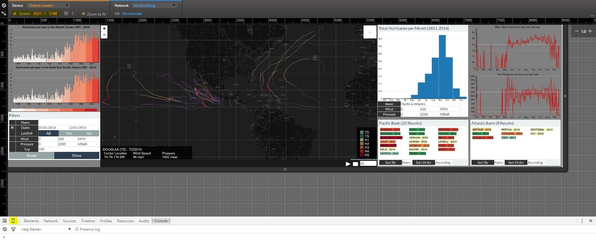
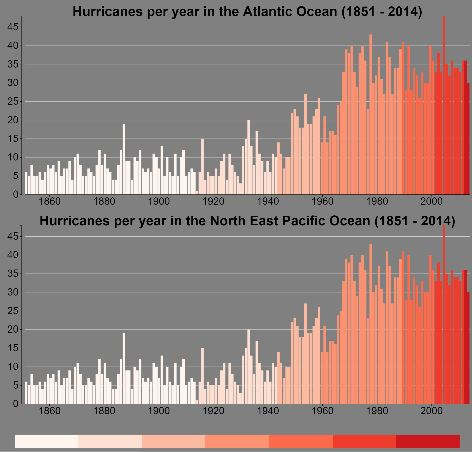
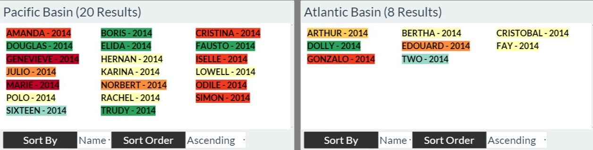
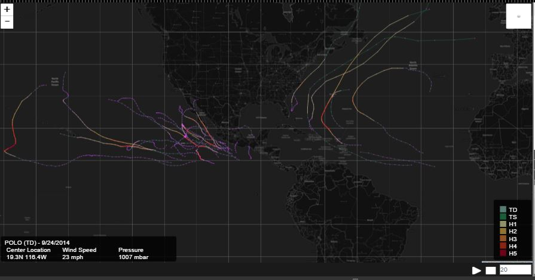
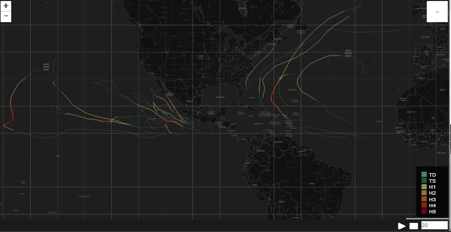

How to use Shadows in the Rain?
How to run the application?
This application has been optimized to run on 8521 x 2188 px. But since this is not always possible, you can use Chrome debugging tools to change the resolution and use the application. To do this, open Chrome, hit F12 key, and click the little mobile icon displayed in the bottom panel and set the width and height to 8521 and 2188 respectively. Once this is done, refresh the page.
Number of Hurricanes per Year
In the below graph you can view number of hurricanes per year. The color change represents the change of technology used to capture the data. This can be viewed by hovering over the legend.
Searching for hurricanes
Available Filters
Below are the list of filters, which can be used to filter the data to be shown up on screen.

Result Lists
Once the filters are applied, hurricanes in that range would be displayed in the below panels. You can also sort the list accorind to name, year and wind speed.
Map Paths and Datapoints
Once all the filters are applied, hurricanes in that range would be displayed on the map. You could then show/hide datapoints, path or change the terrain using the controls available on the top right corner of the map. This functionality is shown in the below 2 images.
Also you can play, pause hurricane paths using the controls available on the bottom right.
Showing hurricane paths along with points and information about each point in the bottom left corner and legend in bottom right corner.

Hiding the datapoints shows only the hurricane path
